Propuesta para revisar antes de implementar · no modifica la app
HealthMove: dirección artística y plan de rediseño
Una app de movimiento que se sienta como un buen servicio sanitario: cálida, clara y de fiar. Navegación tan simple como un chat, exploración visual como un catálogo de vídeos y la sobriedad de un portal de hospital moderno.
1. Identidad visual
Paleta
#FFFFFF · fondo
#136B5A · acción
#DCEFE7 · seleccionado
#E7F0F8 · información
#F7E6D8 · calidez
#12211E · texto
#E07B39 · flechas
#A1261B · solo parar
Tipografía: Atkinson Hyperlegible
Diseñada por el Braille Institute para personas con baja visión: letras que no se confunden (I, l, 1; O, 0). Licencia OFL, alojada en la propia app y guardada en caché, así que funciona sin conexión. Dos pesos: 400 y 700.
Hola, Ana
Tu rutina de 15 minutos está lista.
Escala: 14 · 16 · 18 (texto) · 22 · 28 · 36 · 48 (portada).
Forma
Fotos con esquinas de 20 px y recorte fijo (3:2 en secciones, 16:9 en portada); controles de 52 px de alto; iconos de Bootstrap Icons (solo los que se usan, como sprite local); una sola sombra suave para lo que flota (barra de navegación), nunca en todas las tarjetas.
2. Fotografías reales (Pexels, licencia compatible)
Personas reales y diversas, en entornos cotidianos. Se usan como ambiente en portada y secciones, con el rótulo «Foto ilustrativa», nunca como demostración de cómo se hace un ejercicio (para eso están las ilustraciones). La licencia de Pexels permite usarlas y modificarlas; prohíbe insinuar que las personas respaldan el producto, así que no habrá testimonios junto a las caras.
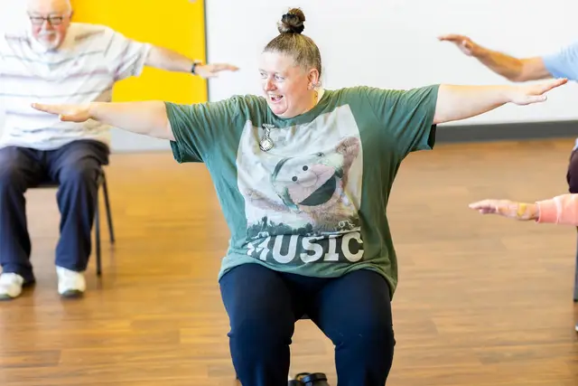
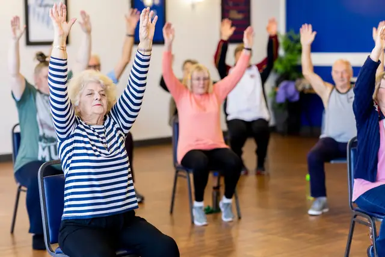
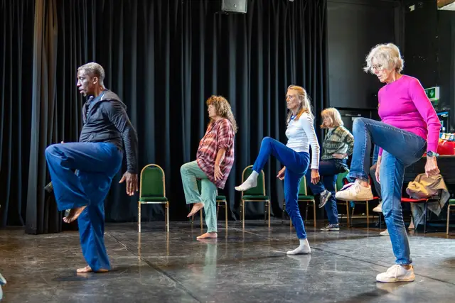
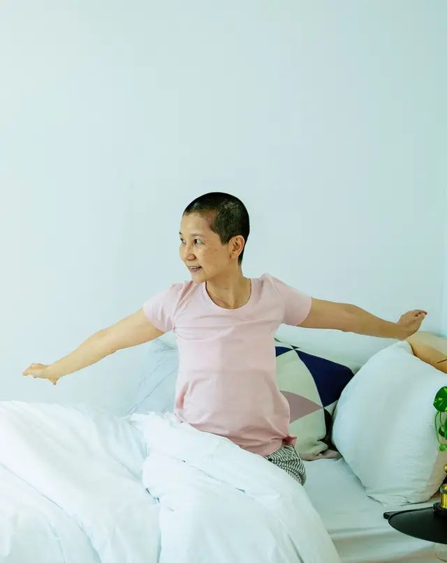
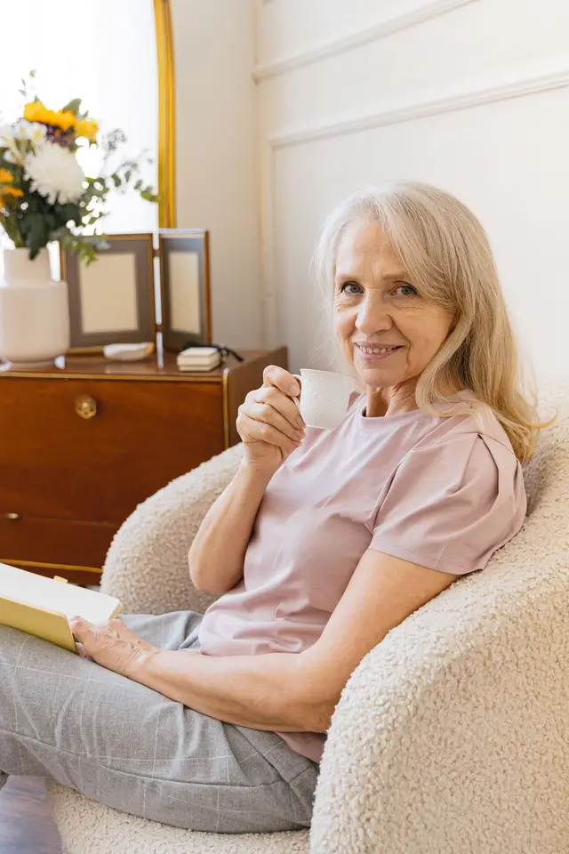
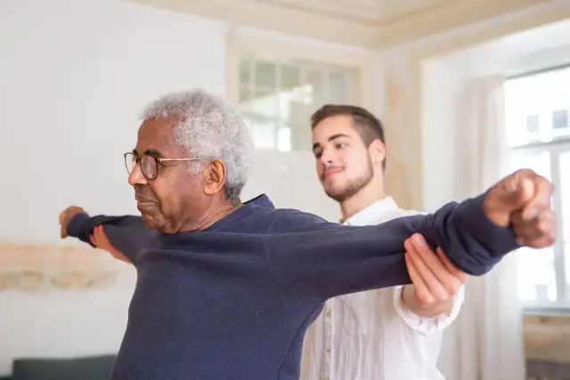
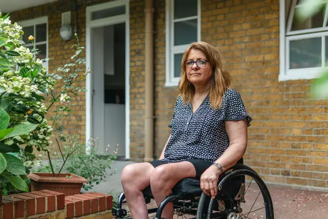
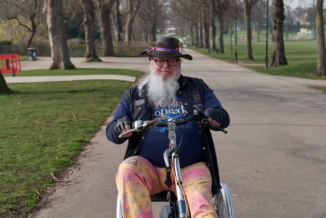
3. Ilustraciones de ejercicios (prototipo)
Cada ejercicio tendrá su ilustración, generada por una figura articulada en SVG: misma figura, mismos colores, mismos apoyos en todo el catálogo. La pose inicial aparece en gris translúcido, la final en sólido, y una flecha naranja marca el movimiento. Los apoyos (silla, pared, cama) se dibujan donde las instrucciones los ponen; las manos y los pies de apoyo quedan fijos. En los ejercicios sin movimiento visible, un círculo marca la zona que trabaja. Son ligeras (2–4 KB cada una) y se guardan en caché.
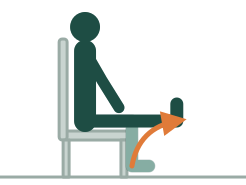
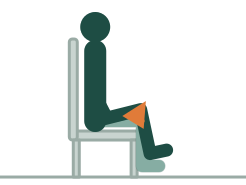
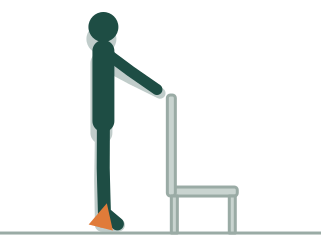
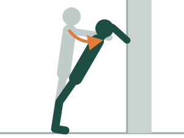
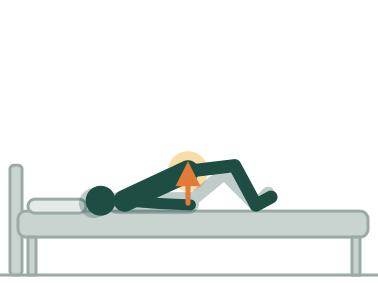
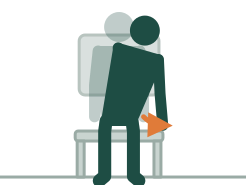
Las 64 ilustraciones se revisan como las etiquetas: el autor comprueba cada una contra las instrucciones de su fuente antes de que el ejercicio salga de «borrador». Un test exige que cada ejercicio tenga su ilustración.
4. Navegación
MÓVIL ESCRITORIO (≥ 992 px)
┌──────────────────────────┐ ┌────────────┬─────────────────────────────────────┐
│ ◉ HealthMove (A) │ │ ◉ HealthMove│ │
│ │ │ │ │
│ contenido │ │ ▸ Inicio │ contenido │
│ │ │ Explorar │ (máx. 1100 px, centrado) │
│ │ │ Mi rutina│ │
├──────────────────────────┤ │ Mi perfil│ │
│ Inicio Explorar Rutina Yo│ ← fija │ │ │
└──────────────────────────┘ │ [Generar mi rutina] │
│ Historial · Ajustes │
└────────────┴─────────────────────────────────────┘
El reproductor oculta la navegación (modo concentración) y deja «Detener» siempre visible.
5. Pantallas
Inicio
┌──────────────────────────────────────┐ │ [ FOTO 16:9: clase sentada ] │ foto a sangre, degradado inferior blanco │ │ │ Hola, Ana (48 px) │ │ Tu rutina de 15 min está lista. │ │ [ Generar mi rutina ] Ver mi perfil │ ├──────────────────────────────────────┤ │ Tu perfil hoy │ fila de «píldoras» con lo que se tiene en cuenta │ (En silla) (Sin agarre) (15 min) ✎ │ ├──────────────────────────────────────┤ │ Para empezar hoy Ver todo│ raíl horizontal desplazable │ ┌─────┐ ┌─────┐ ┌─────┐ ┌── │ miniatura ilustrada + duración + nombre │ │ilus.│ │ilus.│ │ilus.│ │ │ │ └─────┘ └─────┘ └─────┘ └── │ ├──────────────────────────────────────┤ │ Explora por posición │ mosaico 2×2 de FOTOS (patrón distinto) │ ┌────────────┐ ┌────────────┐ │ │ │ En la silla│ │ De pie │ │ │ ├────────────┤ ├────────────┤ │ │ │ En la cama │ │ Calma │ │ │ └────────────┘ └────────────┘ │ ├──────────────────────────────────────┤ │ [foto acompañamiento] Cómo elegimos │ bloque editorial: foto + texto + enlace a fuentes │ tus ejercicios · 3 puntos · Fuentes │ └──────────────────────────────────────┘
Explorar (catálogo)
┌──────────────────────────────────────────────────────┐ │ Explorar │ │ [✓ Solo compatibles conmigo] │ activado por defecto │ (Todo)(En la silla)(De pie)(En la cama)(Suelo) │ chips desplazables │ (Calentar)(Fortalecer)(Estirar y calmar) │ ├──────────────────────────────────────────────────────┤ │ ┌──────────┐ ┌──────────┐ ┌──────────┐ ┌──────────┐ │ rejilla: 2 col móvil, 4 escritorio │ │ ilus 4:3 │ │ ilus 4:3 │ │ ilus 4:3 │ │ ilus 4:3 │ │ insignia de duración sobre la ilus. │ │ 1:30│ │ 0:45│ │ 2:00│ │ 1:00│ │ │ └──────────┘ └──────────┘ └──────────┘ └──────────┘ │ │ Extensión de Marcha en Juntar los Puente en │ │ rodilla la silla omóplatos la cama │ │ En la silla · Fortalecer … │ └──────────────────────────────────────────────────────┘ Estados: cargando (siluetas grises), vacío («Ningún ejercicio coincide…»), sin revisar (fuera del modo desarrollo).
Detalle de ejercicio
┌──────────────────────────────────────┐ escritorio: ilustración a la izquierda, │ ← Explorar │ texto a la derecha (2 columnas) │ [ ILUSTRACIÓN GRANDE ] │ │ Inicio en gris · final en sólido │ │ Extensión de rodilla en la silla │ │ ⏱ 1:30 🪑 En la silla Fortalecer │ │ [✓ Compatible con tu perfil] │ o aviso: «No compatible: exige…» ├──────────────────────────────────────┤ │ Cómo se hace 1 · 2 · 3 · 4 │ pasos numerados grandes │ Cuánto: mantén 5 s, de 2 a 10 veces │ │ Qué exige: (nada de lo que evitas) │ exigencias en lenguaje claro │ Versión más fácil / más difícil → │ enlaces a variantes │ Fuente: Royal Devon NHS · Ver ↗ │ + estado de revisión └──────────────────────────────────────┘
Mi rutina y reproductor
RUTINA REPRODUCTOR (pantalla completa) ┌───────────────────────────────┐ ┌───────────────────────────────┐ │ Ana, esta es tu rutina │ │ ▬▬▬▬▬▭▭▭▭ 3 de 9 │ │ 15 min · 9 ejercicios │ │ [ ILUSTRACIÓN GRANDE ] │ │ ● Calentamiento ─ 3 min │ │ Marcha en la silla │ │ │ [mini] Activación 2:00 │ │ 0:42 ━━━━━━━━────── │ │ ● Parte principal ─ 9 min │ │ [Anterior] [Pausar] [Leer] │ │ │ [mini] Extensión… 1:30 │ │ 1. Siéntate con la espalda… │ │ ● Vuelta a la calma ─ 3 min │ ├───────────────────────────────┤ │ Por qué estos ejercicios ▾ │ │ [ Siguiente ] │ │ [ Empezar ] [Otra combinación]│ │ [ Detener: tengo molestias ] │ └───────────────────────────────┘ └───────────────────────────────┘ Línea de tiempo vertical (no tarjetas): el orden y las fases se leen de un vistazo.
Perfil (asistente)
Las opciones de posición llevan ilustración (silla, de pie con apoyo, silla de ruedas, cama, suelo); el resto del asistente mantiene la lógica actual: triaje de zonas, «sin dificultades», deshacer, resumen y declaración global. Bienvenida con la foto de la mujer en silla de ruedas.
6. Cómo se integra sin romper nada
| Pieza | Plan | Riesgo y cómo se evita |
|---|---|---|
| Bootstrap 5.3.3 | Solo el CSS, copiado en public/vendor/ con su licencia MIT. Sin su JavaScript. | Su «reboot» cambia estilos base. Se carga dentro de una capa CSS (@layer bootstrap) para que los estilos propios ganen siempre, sin pelear por especificidad. |
| Precaché | npm run version-sw ya añade todo public/ y cambia la versión con cualquier archivo nuevo. | Peso: hoy ~0,4 MB; con Bootstrap, fuente, 8 fotos (2 tamaños) e ilustraciones, ~1,6 MB. Se descarga una vez en segundo plano. |
| Fuente | Atkinson Hyperlegible local, font-display: swap. | La regla «sin fuentes web» busca no bloquear el arranque; al servirse desde caché no bloquea. Se acepta y se documenta. |
| Motor, perfil, historial | Sin cambios. La interfaz lee de ellos. | Los 33 tests siguen pasando en cada paso; se añaden tests de ilustraciones, créditos y accesibilidad básica. |
| Explorar | Muestra solo ejercicios revisados (en modo desarrollo, todos con insignia). | Enseñar instrucciones sin revisar sería el mismo riesgo que generar rutinas con ellas. |
7. Orden de trabajo (un commit por paso)
- Bootstrap, fuente, iconos, tokens y la nueva navegación (barra inferior y lateral).
- Inicio con fotos y CREDITOS.md.
- Las 64 ilustraciones, Explorar y Detalle.
- Rutina en línea de tiempo y reproductor con ilustración.
- Perfil con opciones ilustradas.
- Revisión en navegador (390 px y 1280 px), sin conexión, actualizaciones y accesibilidad.
Decisiones que necesito confirmar: el peso de la precaché (~1,6 MB), la fuente alojada localmente y que Explorar oculte los ejercicios sin revisar fuera del modo desarrollo.